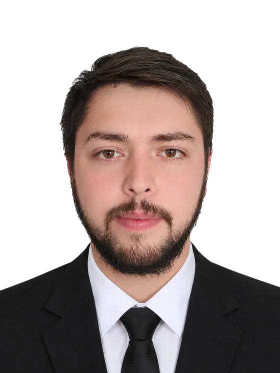
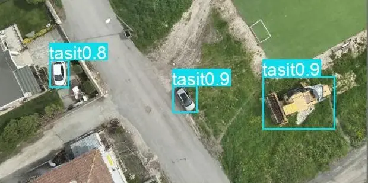
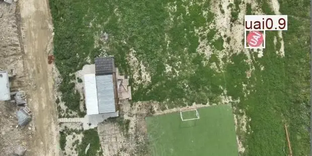
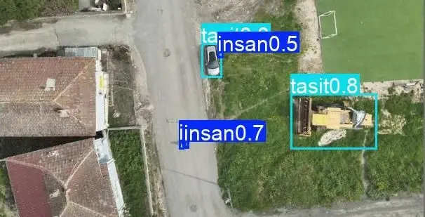
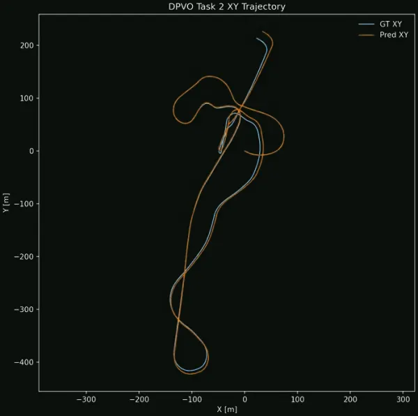

01 · GÖR
Nesneleri bulur
Görüntüdeki araçları, insanları ve iniş alanlarını işaretler; bir aracın hareket edip etmediğini, iniş alanının boş olup olmadığını anlar.
isabet skoru 0,30 → 0,87
[ VX-01 ]TEKNOFEST 2026 · Havacılıkta Yapay Zekâ · Türkiye 3.'sü
> Yapay Zekâ & Bilgisayarlı Görü
Yazılım mühendisliği öğrencisiyim. Kameranın gördüğünü anlayan yapay zekâ sistemleri, güvenli sunucu yazılımları ve mobil uygulamalar geliştiriyorum. Bir fikri ilk satırından çalışan ürüne kadar baştan sona kendim kuruyor, her kararı ölçerek veriyorum.
// 01 · HAKKIMDA

Nişantaşı Üniversitesi'nde İngilizce Yazılım Mühendisliği 3. sınıf öğrencisiyim. Yapay zekâ, bilgisayarlı görü, otonom sistemler ve savunma-havacılık odaklı yazılım mimarileri üzerine çalışıyorum.
VectorX takımının kaptanı olarak geliştirdiğimiz İHA otonomi hattıyla TEKNOFEST 2026 Havacılıkta Yapay Zekâ Yarışması'nda Türkiye 3.'sü olduk. Bunun yanında güvenlik odaklı kendi Android mesajlaşma uygulamamı, ROS 2 tabanlı Jarvis sistemimi ve Spring Boot, NestJS, Next.js ile web platformları geliştirdim.
// engineer.ts — beni derleyen dosya
const engineer = {
name: "Muhammet Emin Genç",
handle: "MEG-1453",
role: ["Yapay Zekâ", "Bilgisayarlı Görü", "Güvenli Backend"],
base: "İstanbul, Türkiye",
award: "TEKNOFEST 2026 · Türkiye 3.'sü",
stack: ["PyTorch", "Spring Boot", "Kotlin", "ROS 2"],
motto: "Her kararı ölçerek ver.",
};
export default build(engineer); // ✓ derlendi · 0 hata// 02 · AMİRAL GEMİSİ PROJE · TEKNOFEST 2026 · TÜRKİYE 3.'SÜ
Bir drone'un kamerasıyla çalışan ve üç işi aynı anda yapan yapay zekâ sistemi: görüntüdeki nesneleri bulur, GPS olmadan drone'un konumunu hesaplar ve kendisine gösterilen bir fotoğraftaki hedefi sahada arar. Hepsi internetsiz ve 60 dakikalık tek bir oturumda.
KISACA · HERKES İÇİN
5 kişilik bir takımın kaptanı olarak drone kamerasından gelen görüntüyü anlayan bir yapay zekâ geliştirdik ve TEKNOFEST 2026 Havacılıkta Yapay Zekâ Yarışması'nda Türkiye 3.'sü olduk. Yarışma boyunca sistemin isabetini neredeyse üç katına çıkardık; yapay zekâyı eğitmek için ekipçe 26.002 nesneyi elle işaretledik.
01 · GÖR
Görüntüdeki araçları, insanları ve iniş alanlarını işaretler; bir aracın hareket edip etmediğini, iniş alanının boş olup olmadığını anlar.
isabet skoru 0,30 → 0,87
02 · KONUMLAN
Uydu sinyali kesilse bile yalnızca kameraya bakarak drone'un ne kadar ve hangi yöne gittiğini hesaplar.
ortalama hata 7,71 m → 6,03 m
03 · TANI
Görev başında verilen bir fotoğraftaki nesneyi binlerce kare arasından bulur; normal kamerada da termal kamerada da.
isabet skoru 0,23 → 0,86
İLK SÜRÜM → FİNAL
0 = hiç bulamıyor, 1 = kusursuz. 16 Temmuz'da gönderilen ilk sürüm ile final sürümün karşılaştırması.
MODELİN GÖZÜNDEN · GERÇEK ÇIKTILAR
Sistemin test uçuşunda gerçekten gördükleri: araçlar, iniş alanları ve uzaktan küçücük görünen insanlar. İniş alanlarını tanıyan hazır bir veri seti olmadığı için ekipçe kendimiz işaretledik.




SİSTEM MİMARİSİ
ANA SÜREÇ · PYTHON 3.10
GÖREV 3 WORKER · PYTHON 3.12
Süre denetleyicisi: Görev 1–2 çıkarımı ve sunucu iletişimi canlı ölçülür; bütçe yetmezse o karede Görev 3 sessizce atlanır.
Dayanıklılık: N ardışık hatada Görev 3 güvenle kapanır, Görev 1–2 akmaya devam eder; bağlantı koparsa kaldığı yerden sürer. Görev 3 ortam çakışmasını önlemek için ayrı süreçte koşar.
GÖREV 1
GÖREV 2
GÖREV 3
GÖREV 1 · SINIF BAZINDA AP@0,5
Bağımsız 2.250 karelik 4K doğrulama uçuşu · UAP: uçan araba park alanı · UAİ: uçan ambulans iniş alanı
DONANIM TAŞIMA
Araştırma kodu olan DPVO, o tarihte desteklenmeyen RTX 5070 Ti (Blackwell) mimarisine 42 satırlık hedefli bir değişiklikle taşındı: 8 kat hızlandı, sadakat testlerinde fark yalnızca %1,2.
VERİ KALİTESİ
5.577 karede 26.002 kutu elle etiketlendi. Çelişkili etiketli 1.778 kare ayrı havuzda düzeltildi; UAP/UAİ sınıflarında 0,95+ AP'nin ana nedeni bu karar oldu.
KENDİNİ DENETLEYEN HAT
51 mekanizmanın çalışma anında etkin olduğunu doğrulayan, süre bütçesini izleyen ve hatalı konfigürasyonu engelleyen denetim katmanı.
GÖREVLER ARASI BAĞ
Görev 3, Görev 1'in ürettiği kutuları yeniden kullanarak ek maliyet olmadan doğruluk kazandı.
// 03 · MOBİL · BACKEND · GÜVENLİK
Eşler, aileler ve dostlar için; mesajlaşma, sesli/görüntülü arama ve acil durum özelliklerini bir araya getiren güvenlik platformu. Android uygulaması ve kendi sunucumda çalışan backend'iyle sıfırdan, tek geliştirici olarak uçtan uca.
KISACA · HERKES İÇİN
Aileler ve yakın arkadaşlar için WhatsApp benzeri ama güvenliği ön planda tutan bir uygulama: mesajlaşma, sesli/görüntülü arama, konum paylaşımı ve tehlike anında tek dokunuşla SOS. Telefondaki uygulamayı da arkasındaki sunucuyu da tek başıma yazdım (yaklaşık 7–10 aylık emek). Sonra kendi uygulamama bir saldırgan gibi saldırdım ve bulduğum 4 ciddi açığı yayına çıkmadan kapattım.
$ ./audit --live --checks=281 --target=mt29-prod-copy
Kendi güvenlik denetimimde bulup kapattığım açıklar:
Giriş yapmış biri başkasının canlı kanalına abone olabiliyordu.
fix → STOMP SUBSCRIBE/SEND yetki kontrolü
Bir cihaz başkası adına konum/pil yayınlayabiliyordu.
fix → topic sahibi = cihaz sahibi kontrolü + hız sınırı
6 haneli kod sınırsız denenebiliyordu.
fix → 8 hane, 7 gün geçerlilik, yönetici onayı, saatte 10 deneme
Aramada herkesin e-postası listeleniyordu.
fix → yalnızca tam e-posta/telefon eşleşmesi
✓ 4/4 açık kapatıldı · 281/281 kontrol geçti · canlının kopyası üzerinde test
MİMARİ
ANDROİD İSTEMCİ
SUNUCU · DOCKER COMPOSE (5 SERVİS)
Mesaj, not, fotoğraf ve sağlık kartı AES-256-GCM ile saklanır.
HPKE / X25519 ile yalnızca alıcı cihaz çözebilir.
15 dk erişim anahtarı, her yenilemede dönen refresh token; tekrar kullanılırsa oturum iptal.
Güvenilir proxy listesi, kademeli hesap kilidi, kullanıcı başına hız sınırı.
Biyometrik/PIN kilit (PBKDF2). Zorla açtırılırsa yakınlara sessiz SOS.
Yeni girişlere cihaz onayı, "kayboldu" modu, uzaktan veri silme.
cap_drop ALL, no-new-privileges; veritabanı ve paneller yalnızca localhost'ta.
Bütünlük imzalı yedekler; canlının kopyası üzerinde 281 kontrol.
ÖZELLİKLER
// 04 · DİĞER PROJELER
YAPAY ZEKÂ ARAÇLARI · CLAUDE CODE · AKTİF GELİŞTİRME
Claude Code için uzaktan kontrol ve kalıcı hafıza
Kısaca: Yapay zekâ kodlama asistanı Claude ile çalışırken, bilgisayar başında olmasam da telefondan kontrol edebilmemi ve asistanın önemli kararları unutmamasını sağlayan kendi aracım.
Claude Code oturumlarını telefondan, PC'den ve VS Code'dan aynı canlı terminal üzerinden yöneten, tamamen kendi bilgisayarında çalışan sistem. Komut ezberi yok: "kaydet", "şunu unut", "hafızayı geçen haftaki haline döndür" demek yeterli; yalnızca onaylanan bilgi okunur Markdown ve yerel git geçmişiyle kalıcı hafızaya yazılır.
sen › bitirmeden kaydedilecek bir şey var mı?
claude › hafiza_ara → hafiza_onizle
1. Ağ erişimi: Tailscale + Tailnet Lock
2. Proje: AI_Control · Node 22 · node-pty
3. Görev: macOS / Linux desteği (açık)
claude › Hepsini mi kaydedeyim, hangilerini (ör. 1 3)?
sen › 1 3
✓ hafiza_kaydet · 2 kayıt · yerel git geçmişine işlendi
● Açık kaynak (Apache-2.0) olarak yayına hazırlanıyor
ROBOTİK · DAĞITIK SİSTEMLER · v1.0 → v3.0
Edge-to-Cloud robotik cihaz orkestrasyonu
Kısaca: Sahadaki robotları tek bir merkezden, internet üzerinden izleyip yönetmeye yarayan sistem.
ROS 2 tabanlı otonom cihazların, bulutta çalışan Spring Boot backend'i üzerinden merkezi olarak izlenip yönetilmesi için tasarladığım mimari. Üç ana sürümde geliştirdim.
AKILLI ŞEHİR · FINTECH · FULL-STACK
Akıllı şehir gençlik FinTech ekosistemi
Kısaca: Gençlerin mahalle esnafından iş alıp ücretini güvenle alabildiği, belediyenin de süreci takip ettiği bir platform.
Gençleri, esnafı ve belediyeyi aynı platformda buluşturan görev ve ödeme ekosistemi: e-Devlet girişi (mock), güvenli havuz (escrow), adil ücret hesaplama, teşvik puanları, belediye yönetim paneli ve yapay zekâ destekli dolandırıcılık tespiti.
FULL-STACK · LLM ENTEGRASYONU
Yapay zekâ destekli kişisel finans yönetimi
Kısaca: Harcamanı günlük bir cümleyle yazdığında kendisi anlayıp kaydeden, "taksitle araba alırsam ne olur?" gibi sorulara cevap veren kişisel finans asistanı.
Gelir-gider, abonelik ve periyodik ödemeleri tek yerden takip eden web uygulaması. LLM motoru yapılandırmayla yerel (Ollama) ya da bulut (OpenAI, Gemini) arasında değiştirilebiliyor; finansal simülasyon ve sohbet hafızalı danışman içeriyor.
› "Dün Migros'tan kartla 450 TL alışveriş yaptım"
→ tutar 450 TL · yer Migros · ödeme kart · tarih dün
2024 · JAVA · İLK BACKEND'İM
Sosyal medya platformu · Spring Boot + React
Kısaca: Facebook benzeri bir sosyal ağın arka planda çalışan sunucu tarafı; Java ile yazdığım ilk backend.
Java ile yazdığım ilk backend: Facebook benzeri bir platformun REST API'si. Kullanıcı, gönderi, yorum ve beğeni akışlarını; JWT tabanlı Spring Security (filtre, token sağlayıcı, entry point), DTO katmanı ve global hata yönetimiyle katmanlı mimaride kurdum. Arayüzü React ile tek sayfalık uygulama olarak bağladım.
GITHUB LABORATUVARI
Açık kaynak denemelerim, güvenlik araçlarım ve gömülü sistem çalışmalarım.
github.com/MEG-1453// 05 · YETKİNLİKLER
PROJELERİN DAĞILIMI
Bu sayfadaki 12 projenin dokunduğu alanlar. Bir proje birden çok alanda sayılabilir.
$ ls ./diller
$ ls ./yapay-zeka
$ ls ./backend
$ ls ./mobil-web
$ ls ./robotik-gomulu
$ ls ./guvenlik-araclar
// 06 · DENEYİM · LİDERLİK · EĞİTİM
meg-1453@portfolio:~$ git log --kariyer --graph
KARİYER GRAFİĞİ · git log --graph
Ana hat üniversitem; ondan ayrılan dallar aynı anda yürüttüğüm görevler. Halkalar tek seferlik etkinlikler, parlayan halka derece. Üzerine gelince ayrıntısı açılır.
T3 Vakfı / TEKNOFEST İstanbul İl Koordinatörlüğü
Üniversite ilişkilerini koordine ediyor; öğrenci kulüpleriyle vakıf arasındaki iletişimi ve TEKNOFEST organizasyon süreçlerini destekliyorum.
VectorX · Takım Kaptanı & AI Geliştiricisi
5 kişilik ekibin teknik yönünü belirledim: hangi yapay zekâ modelinin kullanılacağına karar verdim, eğitim-test döngüsünü ve teknik raporlamayı yürüttüm. Sonuç: Türkiye 3.'lüğü.
Nişantaşı Üniversitesi & T3 Vakfı / TEKNOFEST
Yerli Savunma Ekosisteminin Geleceği
Nişantaşı Üniversitesi TEKNOFEST Kulübü
Çelikkubbe hava savunma, insansız kara aracı ve blokzincir dikeylerinde takım kurulumu, teknik koordinasyon ve raporlama desteği.
Katılımcı
Siber güvenlik eğitim programı; gerçek saldırı senaryolarını çözdüğümüz CTF görevleri. MT-29'daki güvenlik denetiminin temeli burada atıldı. Ekim 2026'da programa yeniden başladım.
Katılımcı
Nişantaşı Üniversitesi · 3. sınıf
// 07 · İLETİŞİM
Proje, staj ve iş birlikleri için yazabilirsin. Kaynak kodlar, demo videoları ve teknik raporlar talep üzerine paylaşılabilir.
$ ./connect --user=MEG-1453 --birlikte-calisalim
BELGELER
PDFCV — Türkçe90 KB PDFCV — English87 KB PDFPortfolyo · 5 sayfa543 KB● İstanbul, Türkiye · UTC+3 · --:--
Diller TR · EN · AR
Kullanıcı adı MEG-1453
DESTEK
Açık kaynak denemelerim, yarışma projelerim ve bu site gece kahveleriyle büyüyor. Kahve ısmarlamak ya da bir proje hakkında konuşmak istersen WhatsApp'tan ya da e-postayla doğrudan bana yaz.